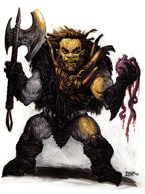

黑武士也被人称为黑骑士，他们是黑魔法的研究者，范围包括黑暗的技艺，邪恶的仪式以及法术。黑武士并不能施展法术，但他们精于运用奥术来强化自己的战斗技巧。
邪恶的战士，尤其是曾经兼职法师或术士的角色是黑武士的最佳人选。但偶尔，专职的法师，术士，吟游诗人，巡林客甚至是牧师也会进阶黑武士。黑武士常常独自隐秘行动，但也常常会和邪恶的术士或法师结成同盟，他们也有时会雇佣一批邪恶的类人生物，诸如兽人，豺狼人或是熊地精保卫自己黑暗的圣居。黑武士渴求力量和权势，他们通过血和钢铁达成自己的目的。黑武士并不十分狡诈，但他们也并非傻瓜。事实上，这些结合了力量和指挥的战士让人不寒而栗。
生命骰：d10
需求：想要成为一名黑武士，角色必须满足以下条件：
阵营：任意邪恶
基础攻击加值：+5
技能：炼金3级，知识（奥术）3级，语言（炼狱语或深渊语），法术辨识1级
专长：钢铁意志
特殊：角色必须独自一人忍受长达一周的黑魔法仪式，并经过一月以上的研究和学习才能进阶黑武士。
本职技能：炼金（智力），唬骗（魅力），攀爬（力量），专注（体质），躲藏（敏捷），跳跃（力量），知识（奥术）（智力），知识（界域）（智力），潜行（敏捷），骑乘（敏捷），探知（智力），法术辨识（智力）
每等级技能点数：4+智力调整值
表5-18 黑武士
等级 基础攻击加值 坚韧豁免 反射豁免 意志豁免 特殊
1 +1 +2 +0 +2 黑暗神油
2 +2 +3 +0 +3 黑暗武器
3 +3 +3 +1 +3 黑暗圣药
4 +4 +4 +1 +4 黑暗神油
5 +5 +4 +1 +4 结印肌肤
6 +6 +5 +2 +5 黑暗圣药
7 +7 +5 +2 +5 黑暗神油
8 +8 +6 +2 +6 反斥肌肤
9 +9 +6 +3 +6 黑暗圣药
10 +10 +7 +3 +7 黑暗神油
职业特性：
擅长武器及防具：黑武士擅长所有简单武器，军用武器，所有防具以及盾牌。
黑暗神油（SU）：黑武士可以运用禁断的奥术技巧创造出黑暗神油涂抹在自己的躯体上。每名黑武士创造的黑暗神油都只对自己有效。并且，黑武士只能在级别提升到特定等级（1级，4级，7级和10级）时，创造一剂神油。当黑武士达到特定等级时，可以从下表中选择自己需要的超自然能力，效果永久持续。黑武士可以选择的最高神油等级由黑武士的等级附加角色的魅力调整值决定。黑武士不能重复选择同一种效果。
神油等级 名称 效果
2 或以下 暗夜住民 角色获得盲斗做为奖励专长
3-4 恶魔敏药 角色获得战斗反射做为奖励专长
5-6 迷之身躯 角色的天然防护等级获得+1的调整
7-8 地狱之力 角色在力量，体质和敏捷上获得+1的调整
9 无踪快步 角色的行动范围增加10尺
10 邪恶一击 角色可每日3次施展邪恶一击，对善良生物附加2d6点伤害。
11 或以上 邪神之怒 角色每日3次，在一轮内同时进行全回合攻击以及移动或移动等效动作
黑暗武器（SU）：经过3回合的准备（包括特殊的仪式以及花费50枚金币的炼金材料），黑武士可以在任意武器上附魔，使之成为+1的魔法武器。若目标武器已经拥有了附魔等级，则黑武士可以在原武器的基础上增加相当于+1附魔等级的特殊属性（参见城主指南第八章，武器特性）。武器只有在黑武士手中才能发挥出本作用，持续时间每黑武士等级1小时。黑武士只能同时在一件武器上附魔一次。
黑暗圣药（SU）：从3级开始，黑武士可以运用黑魔法的力量结合炼金术制造出黑暗圣药。每名黑武士创造的黑暗圣药都只对自己有效。并且，黑武士只能在级别提升到特定等级（3级，6级和9级）时，创造一剂圣药。当黑武士创造黑暗圣药时，可以从下表中选择自己需要的超自然能力，效果永久持续。黑武士可以选择的最高圣药等级由黑武士的等级附加角色的魅力调整值决定。黑武士不能重复选择同一种效果。
神油等级 名称 效果
3 或以下 秽恶知识 角色从下表中选择一项额外专长
4-6 邪恶灵光 角色在防护等级上获得+1的偏斜加值
7-8 深狱之力 角色在智力，感知和魅力上获得+1的调整
9 黑暗直觉 角色获得神奇的力量（可以察觉到周围60尺内任意接触地面的生物）
10 或以上 恶魔之翼 角色可以每日一次施展“恶魔之翼”，施法者等级相当于角色的黑武士等级
秽恶知识额外专长列表：双巧手，冲撞，顺劈砍，拨挡飞箭，闪避，擅长异种武器，寓守于攻，远程射击，强力顺劈砍，精通重击*，精通卸除武器，精通先攻，精通摔绊，精通双武器作战，精通徒手打击，灵活移动，骑乘射击，骑乘战斗，近程射击，强力攻击，精准射击，快拔，快速射击，快速骑乘攻击，移动射击，奋力冲刺，跳跃攻击，震慑拳，精通击破武器，践踏，双武器作战，武器娴熟*，武器专攻*，武器专精*，旋风攻击
（标记有*的专长，每次必须选择不同的武器。角色在选择专长时，必须达到专长所需的前提条件，包括属性要求以及基本攻击加值。详见玩家手册第五章，专长）
结印肌肤（SU）：通过祭祀仪式，黑武士获得伤害减免5/+3。
反斥肌肤（SU）：通过邪恶的仪式和刺青，黑武士获得20点法术抗力。